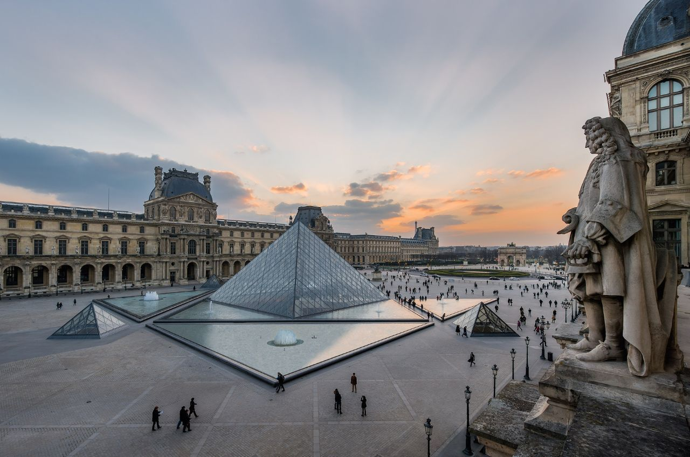
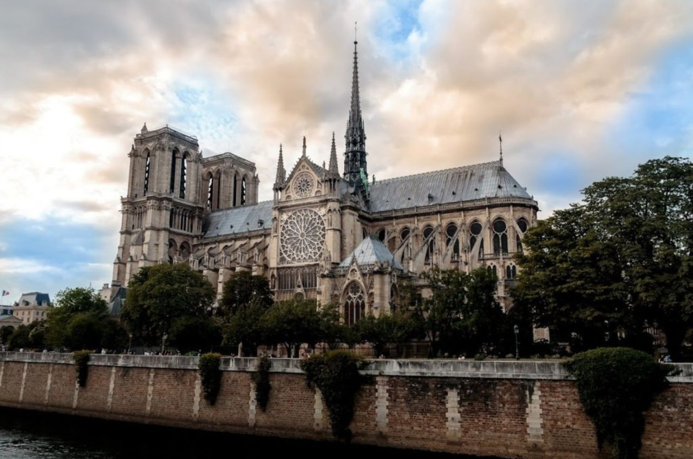
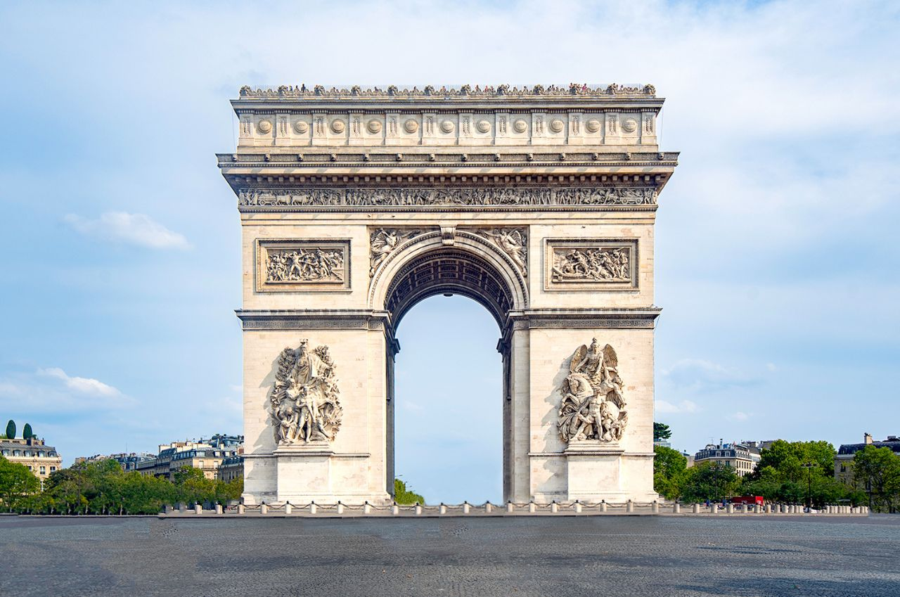
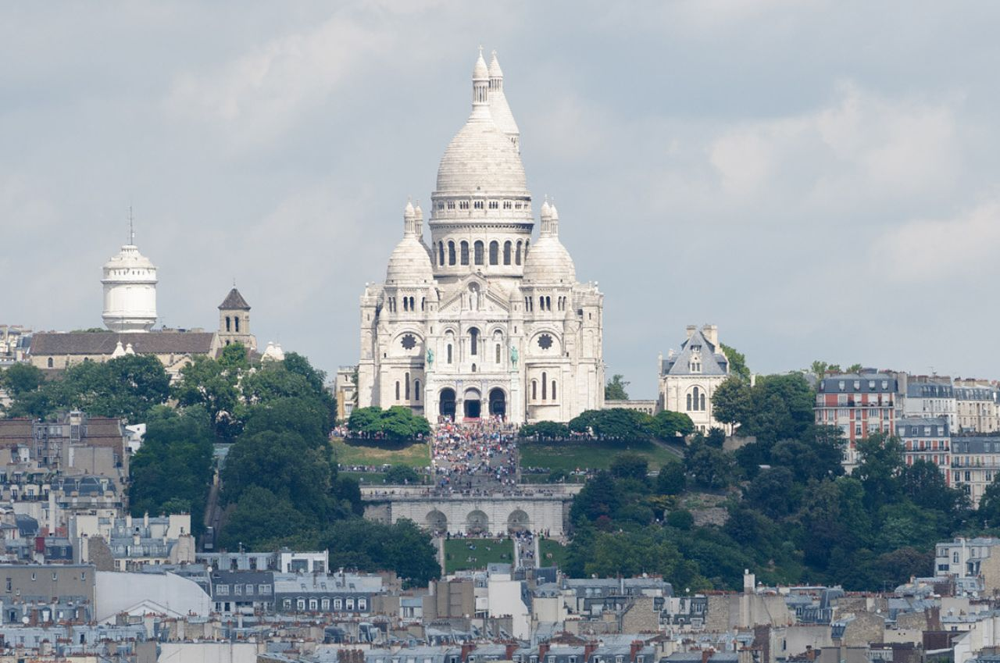

2 / 5

Musée du Louvre
3 / 5

Cathédrale Notre-Dame de Paris
4 / 5

Arc de Triomphe
5 / 5

Montmartre
❮
❯
Mon voyage parfait
Description de la destination
Paris est la capitale de la France et l’une des villes les plus visitées au monde. Située au bord de la Seine, elle est reconnue pour son patrimoine historique, son architecture monumentale et son influence culturelle. On y retrouve des monuments emblématiques, des musées de renommée internationale et une tradition gastronomique profondément ancrée dans l’histoire française. Surnommée « la Ville Lumière », Paris a joué un rôle majeur dans les domaines de l’art, de la littérature, de la mode et de la philosophie depuis plusieurs siècles.
Endroits intéressants à visiter
1. Tour Eiffel
Symbole emblématique de Paris, construite en 1889 pour l’Exposition universelle.
2. Musée du Louvre
Le plus grand musée d’art au monde, célèbre pour abriter la Mona Lisa.
3. Cathédrale Notre-Dame de Paris
Chef-d’œuvre de l’architecture gothique, commencée au XIIe siècle.
4. Arc de Triomphe
Monument honorant les soldats français, situé sur les Champs-Élysées.
5. Montmartre
Quartier artistique connu pour ses ruelles pittoresques et la basilique du Sacré-Cœur.
Voici une liste de mets populaires en France
| Met |
Description |
Photo |
| Croissant |
Viennoiserie feuilletée au beurre, consommée au petit-déjeuner. |
 |
| Baguette |
Pain traditionnel français à croûte croustillante. |
 |
| Steak frites |
Plat classique composé de bœuf grillé et de frites. |
 |
| Fromages français |
Large variété de fromages comme le brie et le camembert. |
 |
| Crème brûlée |
Dessert à base de crème à la vanille avec une couche de sucre caramélisé. |
 |
Source : ChatGPT